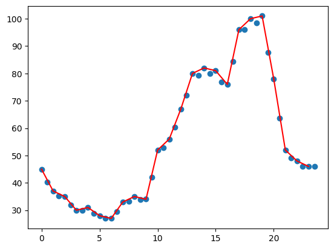

from nbdev_demo.data_handler import *main_strategy
This module contains the main strategy to predict half hourly prices from hourly prices.
Strategy Explanation
Main strategy finds half hourly prices by averaging two consequtive prices and multiplying with a constant value.
\[ s_j = (s_i + s_{i+1})/2 * 0.98 \] where \[ j = i + 0.5 \] and \[ i \in [0, 1, 2, ..., 22] \]
Get data and make transformations.
data = some_api_call()
df = transform_data(data)
df = convert_to_float(df)
df.head()| time | price | |
|---|---|---|
| 0 | 0 | 45.0 |
| 1 | 1 | 37.0 |
| 2 | 2 | 35.0 |
| 3 | 3 | 30.0 |
| 4 | 4 | 31.0 |
Start creating the logic.
half_hourly_prices = []
for ind, row in df.iterrows():
if ind != len(df) - 1:
half_hourly_prices.append(row['price'])
half_hourly_prices.append((row['price'] + df.loc[ind+1, 'price']) / 2 * 0.98)
else:
half_hourly_prices.append(row['price'])
half_hourly_prices.append(row['price'])import matplotlib.pyplot as pltplt.plot(df.index, df['price'], color='red')
plt.scatter(np.linspace(0, 24, 49)[0:-1], half_hourly_prices)<matplotlib.collections.PathCollection>
predict_prices
predict_prices (df:pandas.core.frame.DataFrame)
Predict half hourly prices based on hourly prices.
| Type | Details | |
|---|---|---|
| df | DataFrame | Dataframe contains hourly prices |
Create half hourly prices
half_hourly_prices = predict_prices(df)
half_hourly_prices.head()| time | prices | |
|---|---|---|
| 0 | 0.0 | 45.00 |
| 1 | 0.5 | 40.18 |
| 2 | 1.0 | 37.00 |
| 3 | 1.5 | 35.28 |
| 4 | 2.0 | 35.00 |